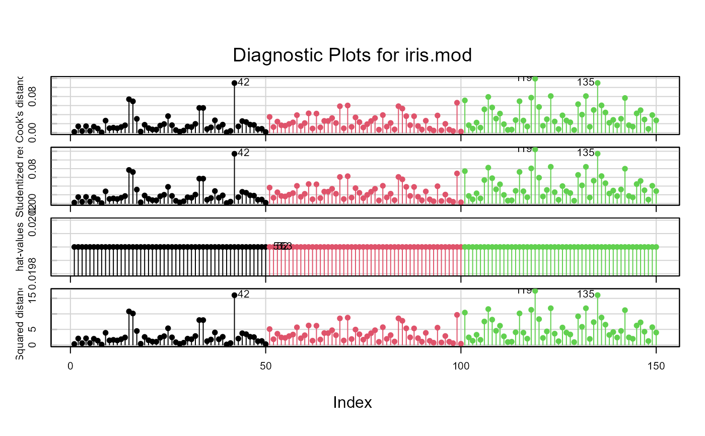
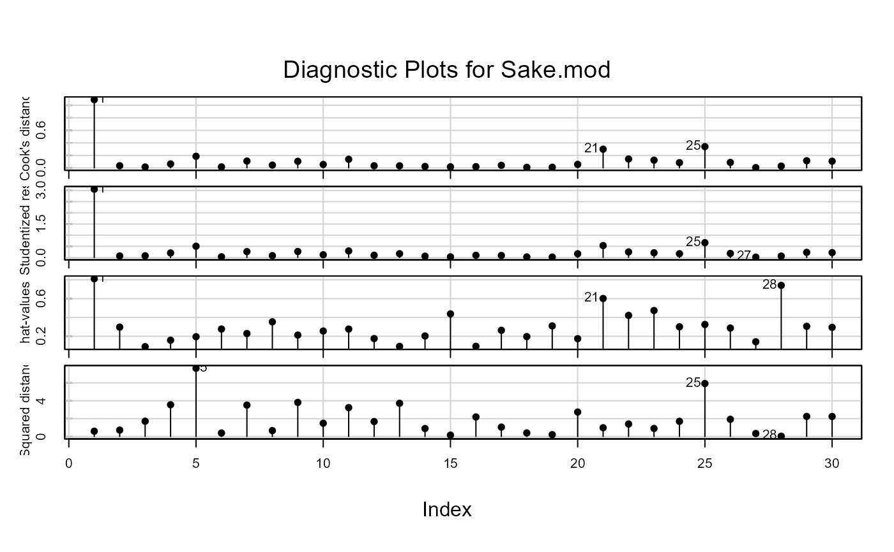
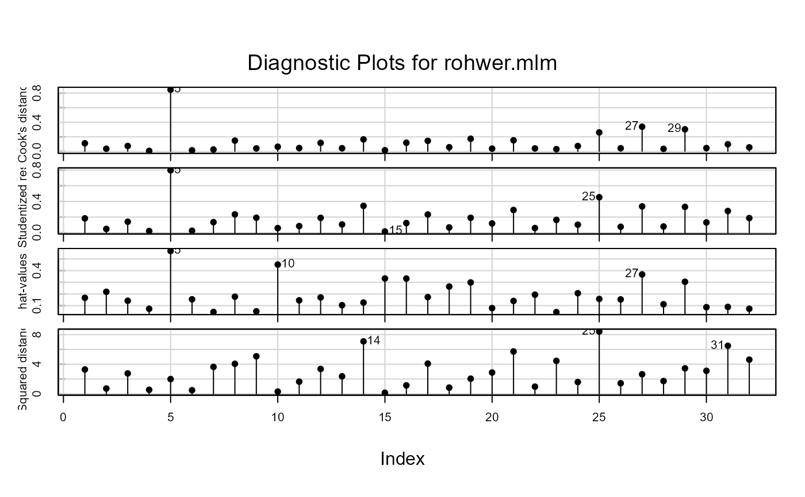

Provides index plots of some diagnostic measures for a multivariate linear model: Cook's distance, a generalized (squared) studentized residual, hat-values (leverages), and Mahalanobis squared distances of the residuals.
Usage
# S3 method for mlm
infIndexPlot(
model,
infl = mlm.influence(model, do.coef = FALSE),
FUN = det,
vars = c("Cook", "Studentized", "hat", "DSQ"),
main = paste("Diagnostic Plots for", deparse(substitute(model))),
pch = 19,
labels,
id.method = "y",
id.n = if (id.method[1] == "identify") Inf else 0,
id.cex = 1,
id.col = palette()[1],
id.location = "lr",
grid = TRUE,
...
)Arguments
- model
A multivariate linear model object of class
mlm.- infl
influence measure structure as returned by
mlm.influence- FUN
For
m>1, the function to be applied to the \(H\) and \(Q\) matrices returning a scalar value.FUN=detandFUN=trare possible choices, returning the \(|H|\) and \(tr(H)\) respectively.- vars
All the quantities listed in this argument are plotted. Use
"Cook"for generalized Cook's distances,"Studentized"for generalized Studentized residuals,"hat"for hat-values (or leverages), andDSQfor the squared Mahalanobis distances of the model residuals. Capitalization is optional. All may be abbreviated by the first one or more letters.- main
main title for graph
- pch
Plotting character for points
- id.method, labels, id.n, id.cex, id.col, id.location
Arguments for the labeling of points. The default is
id.n=0for labeling no points. SeeshowLabelsfor details of these arguments.- grid
If TRUE, the default, a light-gray background grid is put on the graph
- ...
Arguments passed to
plot
Details
This function produces index plots of the various influence measures
calculated by influence.mlm, and in addition, the measure
based on the Mahalanobis squared distances of the residuals from the origin.
References
Barrett, B. E. and Ling, R. F. (1992). General Classes of Influence Measures for Multivariate Regression. Journal of the American Statistical Association, 87(417), 184-191.
Barrett, B. E. (2003). Understanding Influence in Multivariate Regression Communications in Statistics - Theory and Methods, 32, 667-680.
Author
Michael Friendly; borrows code from car::infIndexPlot
Examples
# iris data
data(iris)
iris.mod <- lm(as.matrix(iris[,1:4]) ~ Species, data=iris)
infIndexPlot(iris.mod, col=iris$Species, id.n=3)

# Sake data
data(Sake, package="heplots")
Sake.mod <- lm(cbind(taste,smell) ~ ., data=Sake)
infIndexPlot(Sake.mod, id.n=3)

# Rohwer data
data(Rohwer, package="heplots")
Rohwer2 <- subset(Rohwer, subset=group==2)
rownames(Rohwer2)<- 1:nrow(Rohwer2)
rohwer.mlm <- lm(cbind(SAT, PPVT, Raven) ~ n + s + ns + na + ss, data=Rohwer2)
infIndexPlot(rohwer.mlm, id.n=3)
